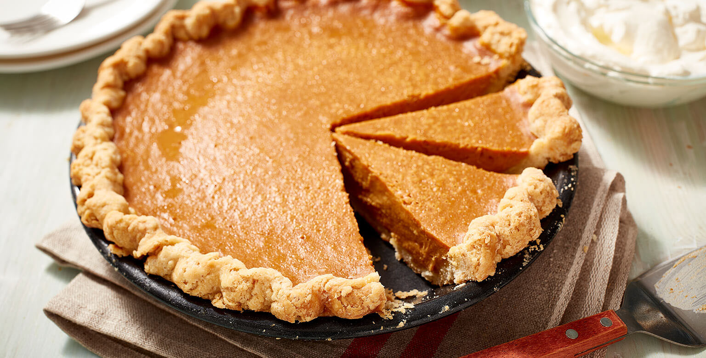

Classic Pumpkin Pie

Description:
Everyone loves a good desert after a delicious meal. It's the classic finale to an already awesome storyline, in this case it being your dinner. Pumpkin pie has always been one of the hits for this occassion.
The pumpkin pie has always been more revered than the main course and for good reason. The smooth, creamy surface, along with its warm spices and sweet taste topped with whipped cream and a touch of cinnamon. This delicacy can get your mouth watering simply at the though of it. Despite not being a groud-breaking recipe, it's still an easy one for something so delicious. All you need is:
Ingredients:
- 1 pie crust
- 15 oz can pumpkin puree
- 2 large eggs
- 1/2 cup light brown sugar
- 1/4 cup granulated sugar
- 1 1/2 tsp ground cinnamon
- 1/2 tsp kosher salt
- 1/4 tsp ground ginger
- 1/4 tsp ground nutmeg
- 1/8 tsp ground cloves
- 12 oz can evaporated milk
- whipped cream for garnish
- sprinkle of ground cinnamon for garnish
Steps:
- Preheat oven to 425 degrees F and add pie crust to pie pan to refrigerate for later use.
- In the mixing bowl, add pumpin, eggs, brown sugar, and granulated sugar, then proceed to whisk until combined.
- Using the same bowl, whisk cinnamon, salt, ginger, nutmeg, cloves, and evaporated milk.
- Pour mixture into pie crust, then cover the rim with a pie crust shield or foil.
- Bake pie at 425 degrees F for 15 minutes and leave it in the oven.
- Reduce oven temperature to 350 degrees F and continue baking another 40-50 minutes until pie is wobbly like jello.
- Cool pie in pan on the wire rack for 2-3 hours or completely cool. Then let it refrigerate.
- Serve with a touch of whipped cream that's sprinkled with ground cinnamon.